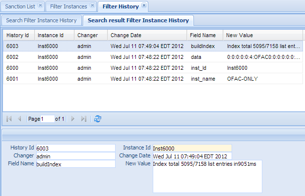

Screening Instance History¶
Every change (add/delete/modify) to the Screening Instance (Engine) will create a record in the instnace history table. This not only services as audit purpose, it also can be used to restored the data to any point of past time.
This function is used to search filter history. Click the “Filter History” in the left navigation menu under Filter management, a new “Filter History” Tab folder will created in the right panel. There are 2 sub-Tab folders, Search Filter Instance History and Search result Filter Instance History.
This function is used to search screening instance history. Click the Instance History in the left navigation menu under Screening management, a new Instance History Tab folder will be created in the right panel.
There are 2 sub-Tab folders, Search Screening Instance History and Search Result Screening Instance History.
Note
There is no Create New or Update/Delete function on instance history.
Search Screening Instance History¶
Search Criteria
| Field Name | Description |
|---|---|
| HistoryId | Unique record identifier. |
| InstanceId | Link to Screening Instance. |
| Filed Name | Name of Field. |
| New Value | The new value of this field |
| ChangeDate | Date and time that changes occurred. |
| Changer | who made the change. |
| AND | Select AND radio box if you want those criteria add together. |
| OR | Select OR radio box if you want to get the result if either criteria meet |
Functional buttons¶
- Find: – click Find button to search.
- Clear:– click Clear button to clear all the criteria.
Search Result Screening Instance History¶
The top part is the table, shows the list of the Screening Instance History that meet the search criteria. The bottom part is the details of the selected entry. There is no create/update/delete function in Screening Instance History.